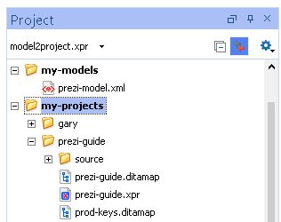
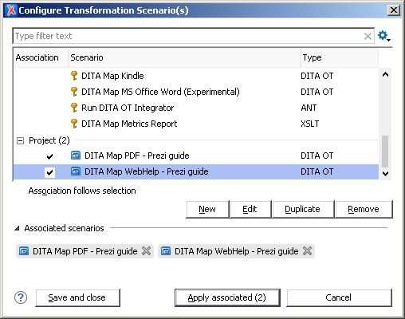

-
Open the project file model2project.xpr in oXygen
XML Editor, right-click the folder where you want to keep the models,
for example my-models, and select .
-
Search for the model template, type the
File name for the new project model and
click Create.
-
Use the Author mode when filling in the new
model with topics and project options.
-
When ready to generate the new project structure, click
Generate at the end of the model file and
create a new folder with the project name in your projects
repository.

-
Switch to the newly created project in oXygen and check the folder
structure and maps.
The project comes with a PDF and a Webhelp publishing scenarios,
which you can use to check the "skeleton" documentation.
